NRC Nanophotonics · Electrical Engineering Intern · May – Sep 2024
128-Channel Optical Phased Array Controller
A reconfigurable electronic control system that sets a precise DC voltage on every phase shifter of a silicon photonic chip, so the lab can steer and focus a laser beam with no moving parts.
Interactive 3D model
Take the system apart
Rotate, zoom and explode the full assembly, follow the signal from the PC to the chip and back through the camera, and watch the genetic algorithm focus the beam. Click any part for its specs.
The problem
128 phase shifters, each needing its own voltage
An optical phased array (OPA) splits laser light into many waveguides, each with a tiny heater. A DC voltage heats the waveguide, changes its refractive index and delays the light. A gradient of delays across the array tilts the combined beam, which makes OPAs attractive for LiDAR and free-space optical communication.
The group's chips needed 128 independently controlled channels at up to 10 V. Commercial drivers offered only 4–8 channels, and a custom OEM build was quoted at about $50K CAD. The goal was a multi-purpose, reconfigurable and low-cost driver the lab could build in-house.
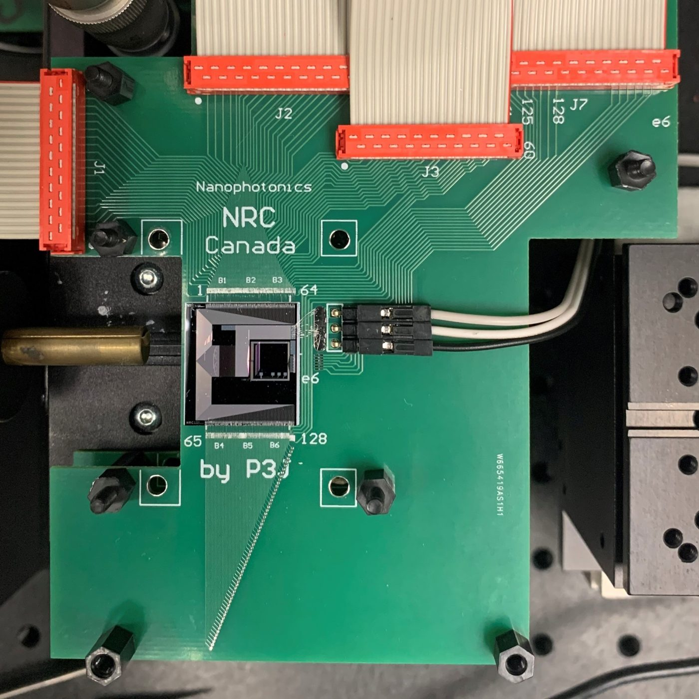
System architecture
From a Python command to a steered beam
Challenge 1 · Not enough pins
Fitting 16 DACs on 6 PMOD ports
Each MAX11300 DAC talks SPI, which needs chip-select, data and clock lines. With the FPGA board's default PMOD pin assignment only 3 of each port's 8 signal pins were usable, enough for just 6 DACs (120 channels).
I re-mapped every PMOD pin in the FPGA design and laid out a new bus on the master PCB, so all 8 signal pins on each port carry a DAC line. The same FPGA now drives 16 DACs (320 channels), well beyond the 128 the chip needs.
| Default PMOD | Re-mapped | |
|---|---|---|
| Usable signal pins per port | 3 / 8 | 8 / 8 |
| DACs driven | 6 | 16 |
| Output channels | 120 | 320 |
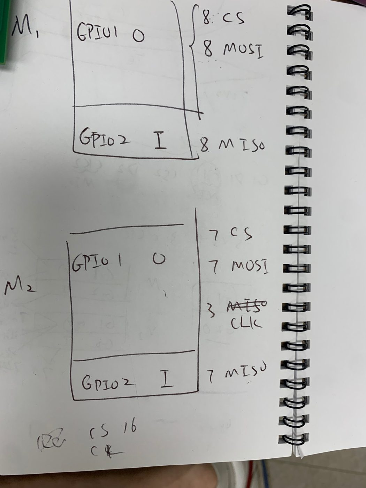
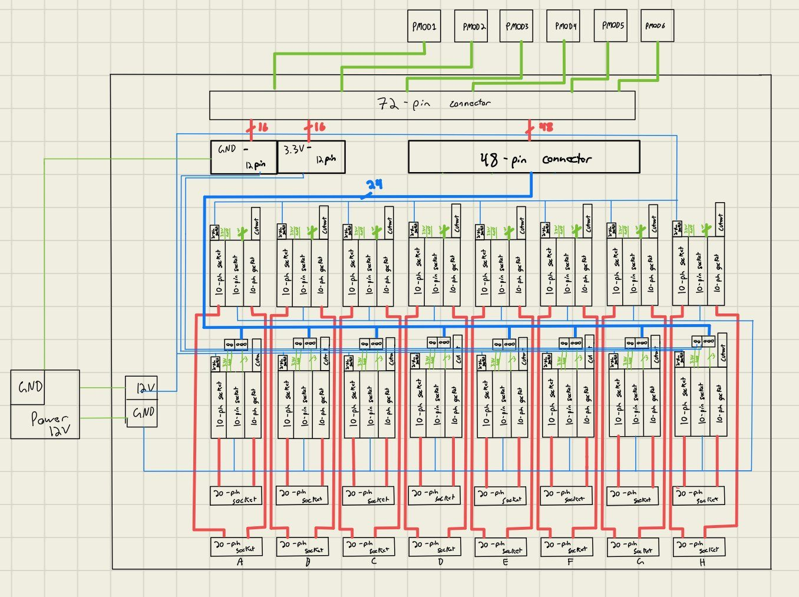
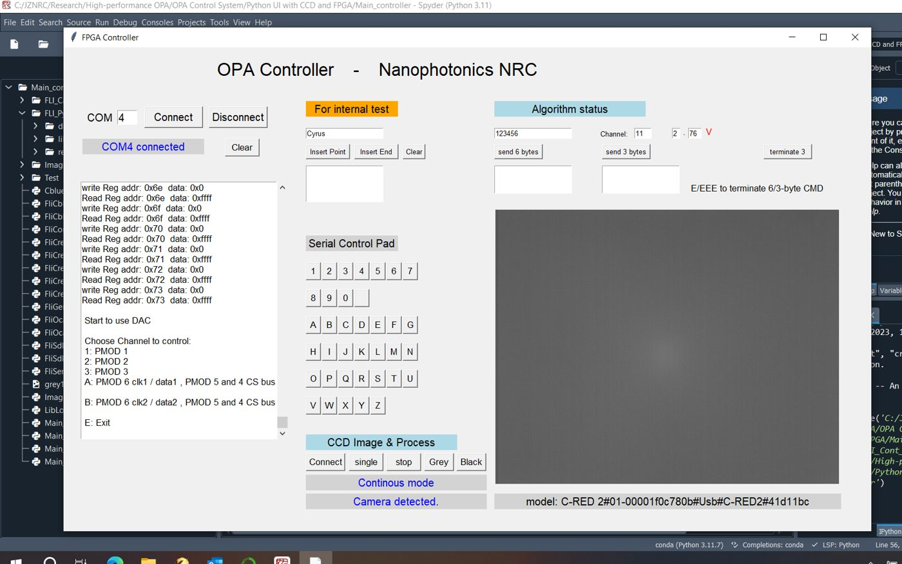
Challenge 2 · One interface
Control, observe and optimize in one place
Control (FPGA), observation (camera) and optimization (algorithms) lived in separate tools. I extended the lab's Python UI to combine them:
- Individual or simultaneous read/write to all 320 channels over USB-UART
- Live IR camera display with FPS, exposure, gain and sensor temperature control
- A genetic optimization algorithm that scores each voltage set from the camera image, keeps and recombines the best, and corrects the chip's fabrication phase errors, raising power in the focused spot by over 40%
Building it
From sketch to optical table
Both boards started as hand drawings, went through CAD, and the master PCB went through two layout revisions before integration in the lab.
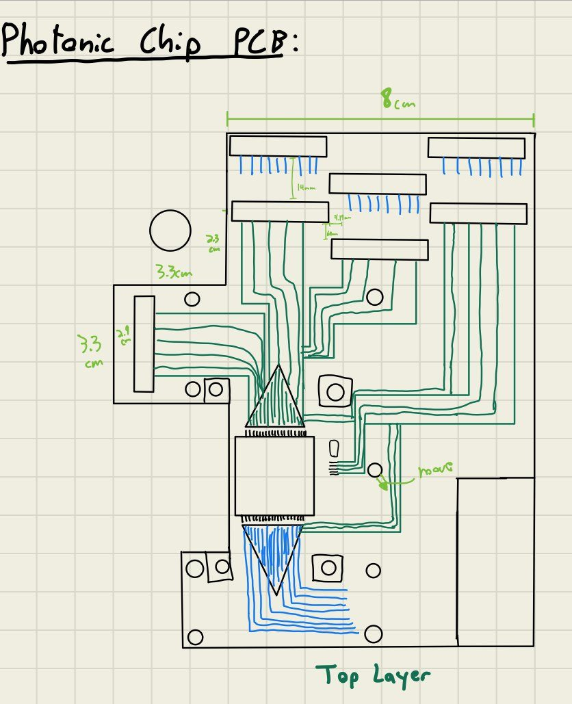
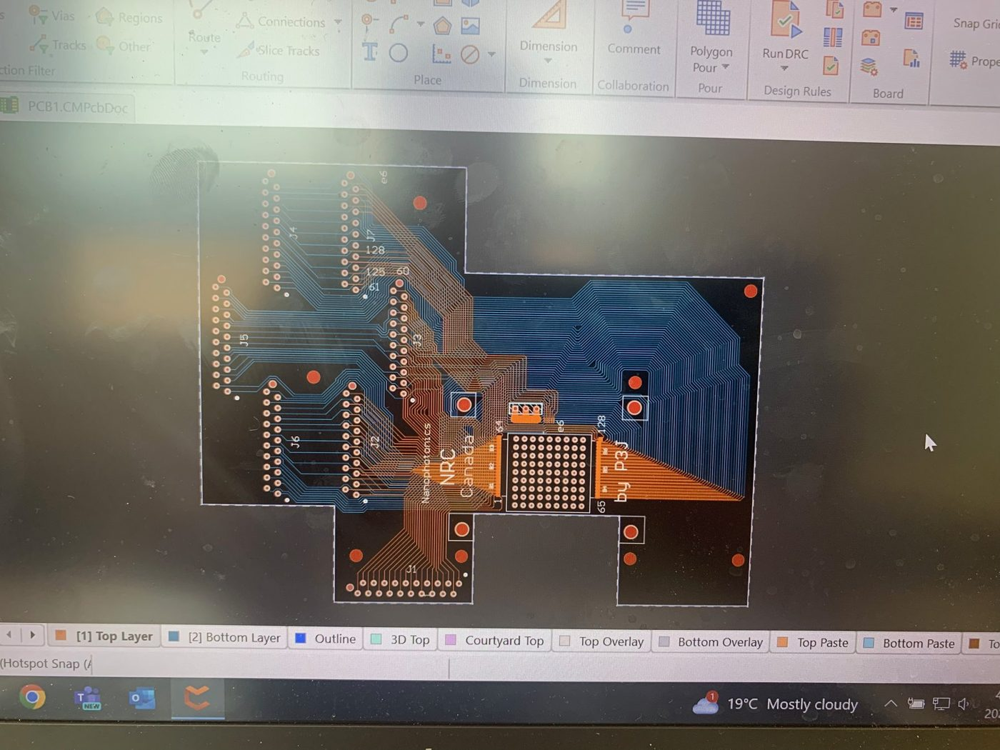
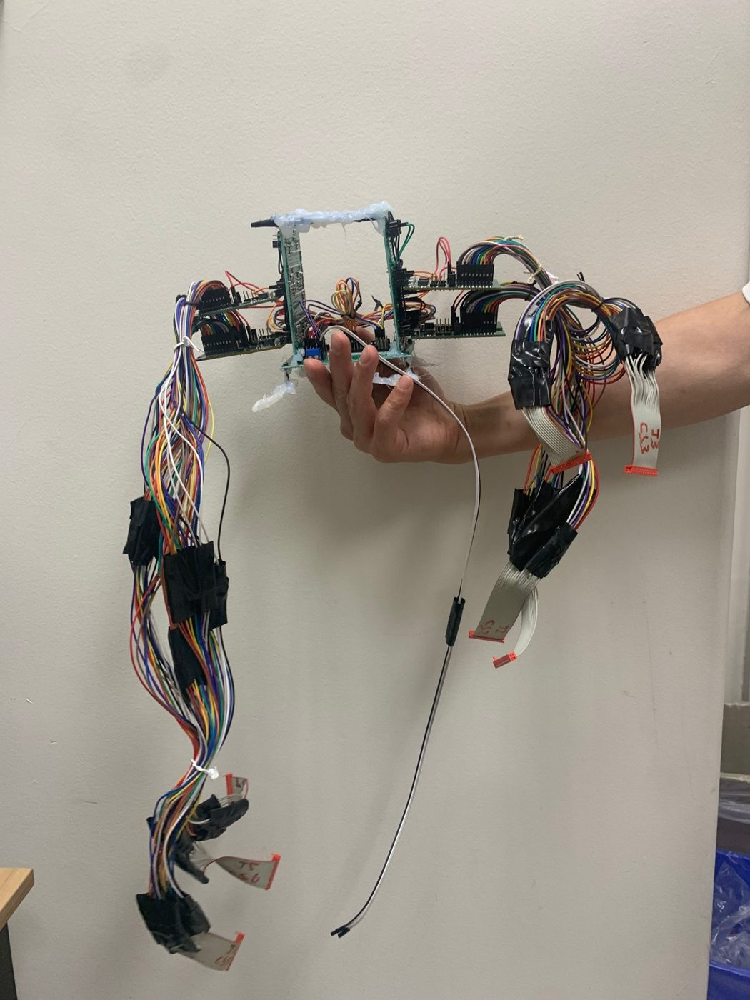
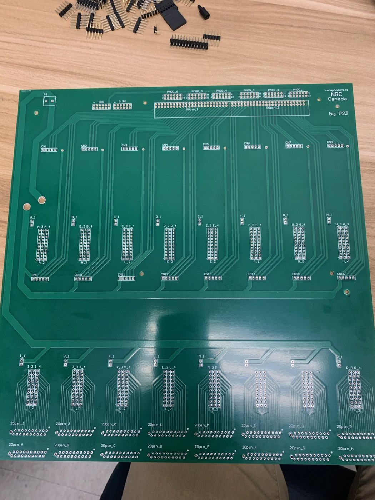
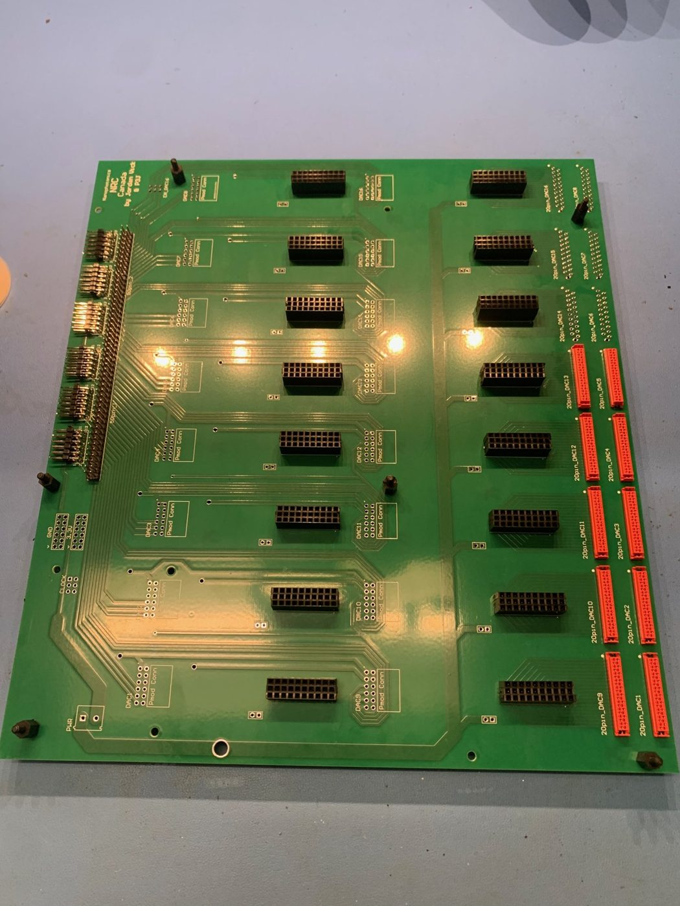
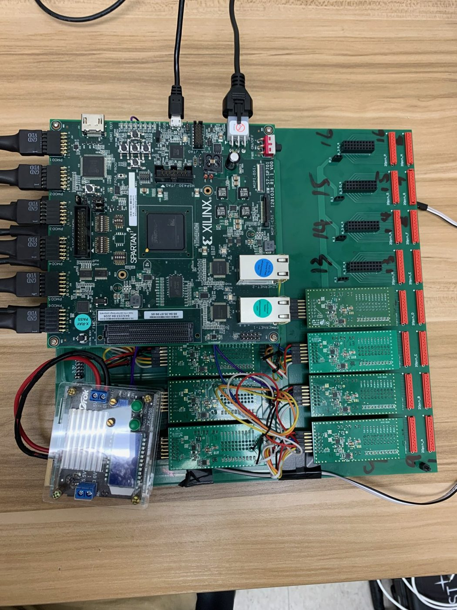
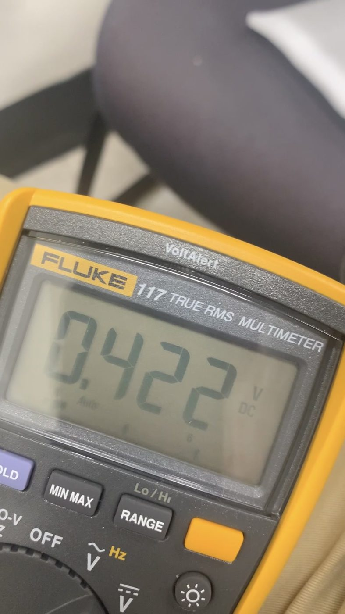
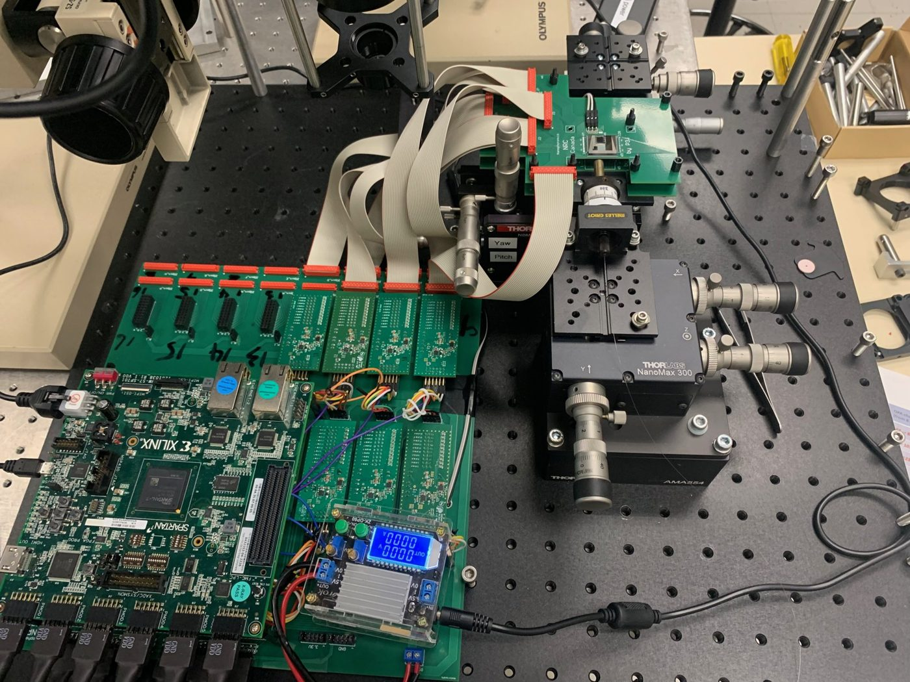
Results
What I delivered
- Designed, assembled and tested two PCBs that replaced a hand-wired harness and improved electrical and mechanical stability
- Scaled the system from 120 to 320 controllable channels by re-mapping the FPGA's PMOD pins and designing a new bus
- Added IR camera control to the Python UI and built a genetic algorithm that increased power in the focused spot by over 40%
- Brought the cost of a 128+ channel driver from a ~$50K OEM quote to under $2K in parts
- Debugged FPGA serial communication and Python issues, and helped characterize photonic chip power loss
What I learned
Takeaways
- Enough photonics to design electronics around an optical system: phase shifters, steering and fabrication error
- Attention to detail: one wrong pin in a 320-channel pinout means nothing works, so I verified each layer before moving on
- Working independently, and knowing when asking for help saves a day
Next step I'd take: a hybrid optimizer that uses the genetic algorithm to find a good region, then gradient-based SPGD to converge faster.